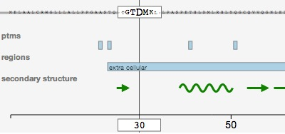
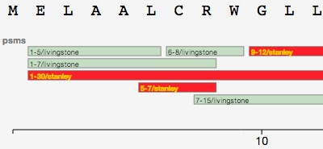
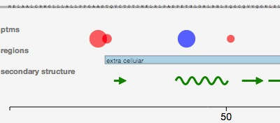
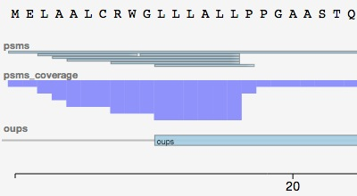
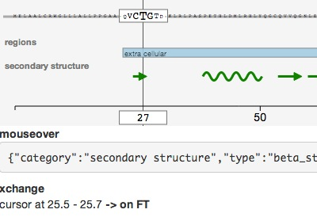
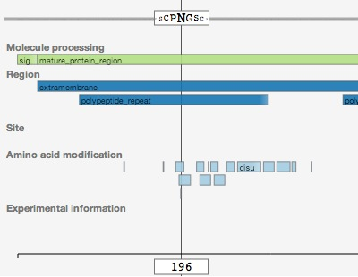
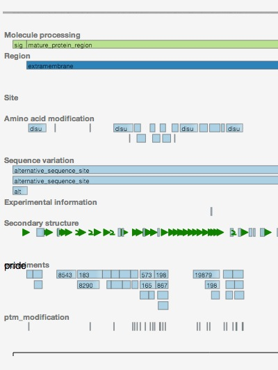
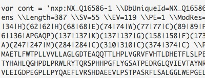
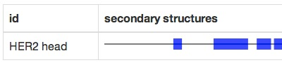
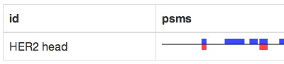

pViz.js examples
github
basic interactive

Two categories, a few features and an interactive view.
custom feature display with CSS

CSS depending on category and feature type.
custom feature display with SVG

Drawing special ideogram depending on the feature type.
different track heights

Getting more of less extend tracks depending on the category.
interactive features display

Mouse over some feature to see more happen.
DAS source

Loading sequence & features from
EBI/Uniprot DAS server
in an interactive view.
multiple DAS source

EBI/Uniprot DAS server is used to populate the sequence,
and Pride server to add features and customize the parsing.
peff reader

PSI Extended Fasta Format
Handles classic fasta information plus annotations.
one liner

Displaying features in a simple, non interactive ideogram
(and potentially showing thousands of them on the same page).
one liner, with multiple categories

The same ideogram, but showing multiple categories at once.